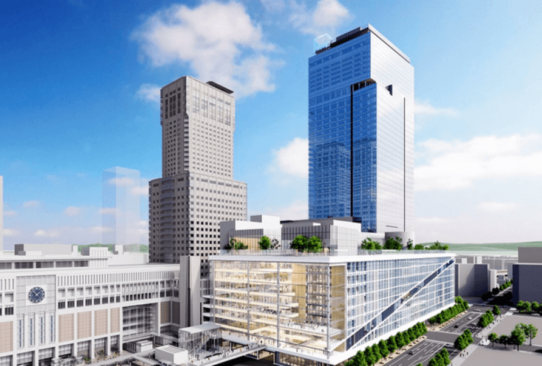
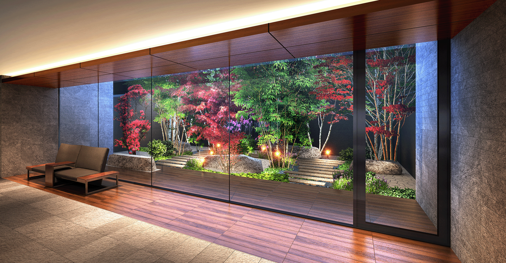

「札幌」駅前を庭にする
新しい未来を、ここから。
札幌駅前再開発エリアを目前にした、
新たな都心レジデンスクリオ札幌グランクラス
今、注目の街「札幌」の1LDK・2LDKプランのご案内
空撮写真
未来に向けて進化を続ける
ターミナルエリア
「札幌」駅前が、
新たなライフステージに。
〈クリオ札幌グランクラス〉が誕生するのは、いま全国的に注目を集める「札幌」駅前エリア。
2030年度に予定されている北海道新幹線の札幌延伸をはじめ、
再開発事業や建替事業などが進行するターミナルエリアが、新たな暮らしの舞台となります。

JRタワー（徒歩10分／約740m）
-
オステリア エストエストエスト（徒歩10分・約740m）
-
Image photo
-
JR「札幌」駅（徒歩10分 約740m）
再開発の進展によって
高まる北海道の中心、
「札幌」駅前の価値。
10年で2倍以上。高まり続ける
「札幌」駅周辺の地価。

様々な再開発が進む札幌駅周辺。本物件と条件の近い「北8条東1丁目」は9年連続で上昇していることがわかります。また、2012年より約237.1%上昇。札幌駅前エリアは資産性でも将来期待のロケーションです。

※出典：土地代データ［土地総合情報システム／地価公示（国土交通省）より］
※1. 地下鉄東豊線・南北線「さっぽろ」駅新設出入口（2023年12月竣工予定／出典:北8西1地区第一種市街地再開発事業ホームページ）。
新幹線の開通した街は
資産価値に期待ができる！？
東京圏や道内広域アクセスの利便性が向上し、新たなビジネスチャンスの拡大も期待できる新幹線新駅の誕生。2015年に誕生した北陸新幹線新駅「金沢」駅を例に新幹線開通前の2012年から開通後の2022年までの地価は176.3％の上昇がみられました。新幹線新駅の誕生は地価などの資産価値に同様の傾向が期待できるのではないでしょうか。
東北新幹線イメージ
最寄り駅の「札幌」「さっぽろ」駅は
高水準のリセールバリュー！
| 順位 | 駅名 | 路線名 | リセール バリュー |
|---|---|---|---|
| 1位 | 札幌 | JR函館本線ほか | 196.3% |
| 2位 | さっぽろ | 地下鉄南北線ほか | 176.6% |
| 3位 | 西11丁目 | 地下鉄東西線 | 172.9% |
| 4位 | バスセンター前 | 地下鉄東西線 | 160.3% |
| 5位 | 中島公園 | 地下鉄南北線 | 146.3% |
マンションを購入するときに街の資産価値をはかる指標の一つに「リセールバリュー」があります。リセールバリューとは約10年前に分譲された新築マンションが、現在中古物件としてどのくらいの価格水準で取引されているかを示す指標のことで、本物件の建設されるエリア、JR 「札幌」駅が196.3%、地下鉄「さっぽろ」駅が176.6％と非常に高水準となっています。
2010年4月～2013年3月に新規分譲され、2021年4月～2022年3月に中古流通した分譲マンションを対象に新築分譲価格からの価格維持率（リセールバリュー）を算出。
※リセールバリューが高いほど資産価値が高いと考えられますが、数値は過去の実績なので、今後の資産性を意味するものではありません。
データ提供：東京カンテイ
※上記の内容は札幌駅周辺エリアの地価上昇及び本物件の将来の中古販売価格を保証するものではありません。
「札幌」駅前だから、
さらに広がる
コンパクトプランの可能性。
セカンドハウスとして、
お子様の住まいとして
「住む」という選択。
単身世帯の住まいとしてはもちろん、札幌ステイの拠点・セカンドハウスとして所有することも選択肢のひとつ。また、お子様の進学などに伴う住まいとしてご検討いただくことも。
Image Photo
賃貸マンションとして
資産運用をする
「貸す」という選択。
札幌都心であり、駅前立地というロケーションを前提とすると、賃貸物件として運用することも可能です。リタイヤ後の居住用に買われた方が、住まわれるまでの数年間だけ賃貸として運用するケースも見受けられます。
Image Photo
将来的な相続対策などを
視野に入れた
「節税」のひとつとして。
不動産を複数人が相続する場合、大きな不動産を相続するよりも、いくつかのマンションを相続する方が分割相続しやすく相続税の節約にもつながるといわれています。さらには現金化しやすいというメリットもあります。
Image Photo
新しい日常に
「札幌駅前×クリオマンション」
というアドバンテージを。
5駅4路線利用可※1
北海道最大のターミナル「札幌」駅を中心にJR・地下鉄、将来的に北海道新幹線が利用可能。市内や道内、行き先に合わせて利用する駅を選ぶことができます。
現地周辺地図
地下鉄南北線「北12条」駅（徒歩8分／約640m）
地下鉄東豊線・南北線「さっぽろ」駅16番出入口（徒歩7分／約560m）
駅前で開放感を愉しむ
幅員の広い創成川通が目の前を走り、斜向かいには北九条小学校。駅前エリアでありながら開放感あふれるロケーションが魅力です。日々、進化を続ける駅前エリアを含めた眺望が愉しめます。
借景外観完成予想図
GRAND CLASS
「グランクラス」の名を冠した邸宅が、
札幌都心での暮らしを満たします。
01
ACCESS & LOCATION
地下鉄「さっぽろ」駅徒歩6分※a・5駅4路線利用可※1で、アクティブに「札幌」を愉しむ暮らしを。
02
Re-DEPLOPMENT
再開発で進化し続ける札幌都心で、
将来を見据えた価値あるポジション。
03
PLAN
開放感あふれる心地よいプランニング。
快適さを重視したクリオマンションクオリティ。
外観完成予想図
外観完成予想図
01
ACCESS & LOCATION
地下鉄「さっぽろ」駅徒歩6分※a・5駅4路線利用可※1で、アクティブに「札幌」を愉しむ暮らしを。
02
Re-DEPLOPMENT
再開発で変わり続ける札幌都心で、
将来を見据えて価値ある立地。
03
PLAN
開放感のあふれる心地よいプランニング。
快適さを重視したクリオマンションクオリティ。
01
ACCESS & LOCATION
地下鉄「さっぽろ」駅徒歩6分※a・
5駅4路線利用可※1で、
アクティブに「札幌」を愉しむ暮らしを。
JR「札幌」駅（徒歩10分 約740m）
あらゆるもののトレンドが
集まった
「札幌」駅前が
普段づかいできる贅沢。
「札幌」駅周辺には、JRタワーをはじめ数多くの複合施設が集まっており
いつでも最先端のファッションやカルチャーに触れることができます。
徒歩圏には日々の暮らしに欠かせないスーパーやドラッグストア、総合病院も。
彩りと潤いに満たされた札幌らしい都心ライフが広がっています。
大丸札幌店（徒歩13分／約1,000m）
札幌ステラプレイス（徒歩11分／約840m）
スポーツデポ 光星店（徒歩6分／約420m）
紀伊國屋書店 札幌本店（徒歩15分／約1,130m）
北海道大学（徒歩9分／約720m）
北海道大学病院（徒歩15分／約1,150m）
市内や道内、
さらには道外までもが身近に。
5駅4路線※1が利用できる
都心ならではのマルチアクセス。
JR・地下鉄路線図
JR・地下鉄・北海道新幹線の5駅4路線※1を利用することができます。市内へのお出掛けはもちろん、道内外への出張や旅行が軽快に。新千歳空港へも快速エアポートの多くが「札幌」駅始発なので、ゆったりと座ってアクセスできます。
地下鉄「大通」駅まで
直通2分
（2分）
地下鉄「すすきの」駅まで
直通4分
（4分）
JR函館本線「小樽」駅まで
直通46〜49分
（33〜34分）
JR千歳線「新千歳空港」駅まで
直通39〜40分
（37〜39分）
「札幌」と「東京」を
ダイレクトに結ぶ北海道新幹線。
2030年度の開業を目指して建設が進められる北海道新幹線。東京までの所要時間は直通4時間30分を目指しており（※2）、 首都圏がいっそう身近な存在に。スキーリゾートとして人気のニセコエリアや、古き良き街並みが魅力の函館エリアといった観光スポットへも気軽に日帰りできるようになります。
Image photo
02
Re-DEPLOPMENT
再開発で進化し続ける札幌都心で、
将来を見据えた価値あるポジション。

空撮写真
未来に向けて生まれ変わる
「札幌」駅前エリア。
札幌駅周辺再開発予想図
今、「札幌」駅前エリアでは数々の再開発事業が進行中。都市機能もより便利に、快適に進化を遂げようとしています。例えば、北海道最高層ビルとなる「北5西1・2地区市街地再開発事業」では、北海道新幹線の新駅との接続が計画されており、そこに新たな商業施設やラグジュアリーホテルなどが入居予定。さらに現在、駅前に点在するバス停を集約したバスターミナルもビル内に整備される予定です。
Image Photo
完成予想図

完成予想図
A：札幌駅南口北4西3地区第一種市街地再開発事業（2028年度竣工予定）完成予想図／提供：札幌駅南口北4西3地区市街地再開発準備組合
B：北5西1・西2地区市街地再開発事業（2028年度竣工予定）完成予想図／提供：札幌駅交流拠点北5西1・西2地区市街地開発準備組合
未来に向けて生まれ変わる
「札幌」駅前エリア。
札幌の都市構造を考えると新千歳空港をはじめとした道内各地と結ばれる高速道路の出入口が都心と離れているという欠点がありました。この長年の課題を解消するために、高速道路から都心へのアクセス性を高める専用道路の建設が現在、検討されています。札樽自動車道・札幌北ICから創成川通の地下をトンネル主体で結ぶもので、渋滞を緩和しながらアクセス時間を短縮。空港や道内各地との移動がよりいっそう軽快なものになることでしょう。
完成予想図
提供：札幌市まちづくり政策局総合交通計画部
今、「札幌」駅前エリアでは数々の再開発事業が進行中。都市機能もより便利に、快適に進化を遂げようとしています。例えば、北海道最高層ビルとなる「北5西1・2地区市街地再開発事業」では、北海道新幹線の新駅との接続が計画されており、そこに新たな商業施設やラグジュアリーホテルなどが入居予定。さらに現在、駅前に点在するバス停を集約したバスターミナルもビル内に整備される予定です。
札幌駅周辺再開発予想図
Image Photo
A：札幌駅南口北4西3地区第一種市街地再開発事業（2028年度竣工予定）完成予想図／提供：札幌駅南口北4西3地区市街地再開発準備組合
B：北5西1・西2地区市街地再開発事業（2028年度竣工予定）完成予想図／提供：札幌市交流拠点北5西1・西2地区市街地開発事業準備組合
未来に向けて生まれ変わる
「札幌」駅前エリア。
札幌の都市構造を考えると新千歳空港をはじめとした道内各地と結ばれる高速道路の出入口が都心と離れているという欠点がありました。この長年の課題を解消するために、高速道路から都心へのアクセス性を高める専用道路の建設が現在、検討されています。札樽自動車道・札幌北ICから創成川通の地下をトンネル主体で結ぶもので、渋滞を緩和しながらアクセス時間を短縮。空港や道内各地との移動がよりいっそう軽快なものになることでしょう。
完成予想図
03
PLAN
開放感あふれる心地よいプランニング。
快適さを重視したクリオマンションクオリティ。
南西側眺望（現地12階相当）
1
ゴルフバッグも楽に片付けられる
収納量豊富なシューズインクローク2
身も心もリラックス
一日の疲れを癒す、広々バスルーム3
使い心地のいい設備を取り揃えた
ゆったり設計の対面式キッチン4
衣類だけでなくスーツケースなども
収納できるウォークインクローゼット5
洋室1との稼働間仕切りを開放すると
約12.5畳のくつろぎ空間に
いつまでも居心地良く、
安心してお住まいいただけるように。
入居後も安心して暮らせる
業界最長※8の15年保証※9を実現。
ご入居後も安心して暮らしていただけるよう「CLIO SUPPORT 15」をご用意しました。住宅設備の修理など、充実のサービスメニューで15年間サポートする住宅設備保証サービスです。修理・交換は無償で、24時間365日、何度でもご利用いただけます。
自分らしくアレンジ＆コーディネートできるセレクトシステム「conomi」。
住まいが快適であることはもちろん、いつまでも愛着を持って暮らしていただくためにセレクトシステム「conomi」を導入。間取りのアレンジ、建具や壁紙などのカラーコーディネート、キッチンや洗面台の高さ、収納の拡大など、豊富なセレクトメニューを取り揃えています。※一部有償
洗練を装い、美意識を磨く。
都心にふさわしい
レジデンスライフへ。
エントランスアプローチ完成予想図
住まう人々の誇りを象徴するエントランス、坪庭が眺めながら表情豊かな四季を
味わう共用ラウンジなど
都心の邸宅にふさわしい気品が感じられるよう
細部にまでこだわってデザイン。
「札幌」駅前の街並に調和しながら確かな存在感を放つ、
新たな生活風景を描くことでしょう。

エントランスホール完成予想図
※a.地下鉄東豊線・南北線「さっぽろ」駅新設出入口より徒歩6分（約430m）2023年12月完成予定／出典：北8西1地区第一種市街地再開発事業ホームページ。新設出入口を利用しない場合は地下鉄東豊線・南北線「さっぽろ」駅16番出入口まで徒歩7分（約560m）
※1 5駅4路線とは、JR函館本線および千歳線「札幌」駅徒歩10分、地下鉄東豊線「さっぽろ」駅徒歩6分、地下鉄南北線「さっぽろ」駅徒歩6分、地下鉄東豊線「北13条東」駅徒歩6分、地下鉄南北線「北12条」駅徒歩8分となります。
※2 北海道新幹線延伸・北海道新幹線札幌駅（ 2030 年度開業予定）出典：北海道新幹線札幌駅の概要についてJR北海道／JR北海道は、「札幌・東京間の所要時間が 5時間1分に短縮される」としていますが、「 北海道新幹線新函館北斗・札幌間の高速化の要請について」－JR北海道で、札幌開業時に東京・札幌間4時間半の運行を目指すと発表しています。
※3 北5西1・西2地区市街地再開発事業 出典／札幌駅交流拠点北5西1・西2地区市街地再開発準備組合
※4 札幌駅南口北4西3地区第一種市街地再開発事業 出典／（仮称）札幌駅南口北4西3地区第一種市街地再開発事業
※5 札幌都心アクセス道路 出典／札幌都心アクセス道路検討会 - 国土交通省 北海道開発局
※6 北海道新幹線延伸・北海道新幹線札幌駅（2030年度末開業予定）出典／新幹線札幌駅の概要について-JR北海道
※7 北6条東3丁目周辺地区計画 出典／北6条東3丁目周辺地区 - 札幌市
※8 2023年1月末時点 株式会社日本経済広告社調べ。
※9 サービス対象期間は鍵の引き渡しから15年間、当社アフターサービス期間を含みます。
※10 サービス期間の15年間、対象の住宅設備機器に限ります。無償修理・無償交換の対象は、取扱い説明書や注意書に従って正しく使用したものの、
電気的・機械的故障且つサービス対象の住宅設備機器の製造メーカーの保証規定にて保証対象となる故障となります。詳しくは「CLIO SUPPORT 15」サービス利用規約をご確認ください。
※掲載の借景外観完成予想図は現地 10 階相当の眺望写真（ 2022年8月撮影）に設計段階の図面を基に描き起こした外観完成予想図をＣＧ合成したもので、形状・色等は実際とは異なる場合があります。形状の細部、設備機器等は表現していません。 周辺の建物の位置、高さ等については実際のものと異なる場合があります。眺望は将来に渡って保証するものでは有りません。
※掲載のリビング・ダイニング・キッチン完成予想図（Cタイプ／有償設計変更プラン）は、設計段階の図面を基に描き起こしたもので、形状・色等は実際とは異なる場合があります。また、家具・調度品・有償オプション等は販売価格に含まれません。
※掲載の空撮写真は2022年8月に撮影したものに一部CG処理したもので、実際とは異なります。（現地の光は位置を表すものであり、物件の大きさや高さを表したものではありません。）
※距離表示については地図上の概測距離を、徒歩分数表示については80mを1分として算出し、端数を切り上げて算出したものであり、信号待ち、一時停止等は含んでおりません。
※表示の鉄道所要時間は、「ジョルダン」に基づいて作成しています。また、通勤時の乗り換え、待ち時間を含めた最短から最長の所要時間を記載しています。通勤時は 7:00 以降の乗車で 8:30 までに目的の駅に到着、日中平常時は10:00以降の乗車で17:00にまでに目的の駅に到着としています。（ ）内の所要時間は日中平常時のものです。
※掲載の完成予想図は全て、設計段階の図面を基に描き起こしたもので、形状・色等は実際とは異なる場合があります。形状の細部、設備機器等は表現していません。表現されている植栽は設計段階のものであり、変更になる場合があります。また葉の色合いや枝ぶりや樹形は想定であり、竣工から生育期間を経た状態のものを描いています。また特定の季節状態を示すものではありません。敷地周辺の建物などについては省略しています。
※掲載の札幌駅周辺再開発予想図は周辺の立地および現在計画中の再開発施設を概念化しイラスト化したもので、実際の建物の形状・起伏・建物の大きさ・距離・方向等は実際と異なります。周辺の建物・道路等は省略・簡略化しています。
※掲載の間取り図は、計画段階の図面を基に描き起こしたもので、今後変更になる場合がございます。
※掲載の眺望写真は2022年7月に現地12階相当より撮影したものに一部CG処理を施したもので、実際とは異なります。また眺望は将来にわたって保障されるものではありません。